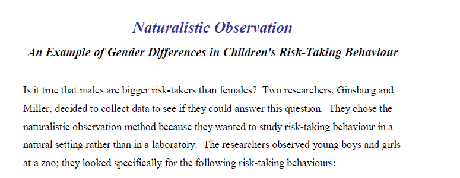
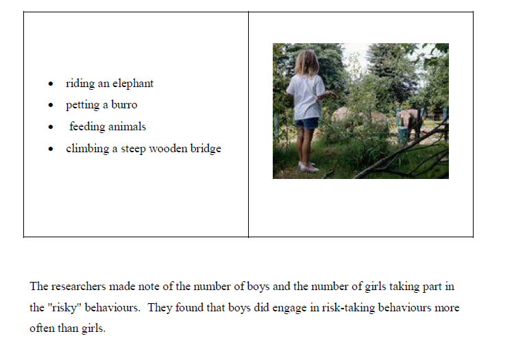

Naturalistic Observation
A form of descriptive research, naturalistic observation, involves monitoring the behaviour of test subjects in "real-life" settings and recording those observations. The researcher does not manipulate or interfere with the subjects of investigation. In the social sciences, this type of research usually involves observing humans or other animals as they engage in their usual activities in natural settings. In the natural sciences such as biology and geology, this type of research may involve observing an animal or groups of animals or, perhaps, some physical phenomena such as an earthquake.
Strengths of Naturalistic Observation: The major strength of naturalistic observation is that it allows researchers to observe behaviour in the setting in which it normally occurs rather than the contrived (artificial) situation of a laboratory. Laboratory settings are limiting and may negatively affect results due to confounding factors. Confounding factors are discussed in a subsequent section of this course.
Limitations of Naturalistic Observation: A major limitation of naturalistic observation relates to the fact that the researcher does not infer the causes of observed behaviours -- it is a descriptive method, not an explanatory one. A psychologist cannot make cause-and-effect conclusions because the setting does not allow for the researcher to control variables. This method can also take great amounts of time because the researcher often has to wait until the behaviour of interest occurs before it can be observed.
Please review the example of Naturalistic Observation below:


naturalistic observation: research in which individuals observe others in natural situations without interference